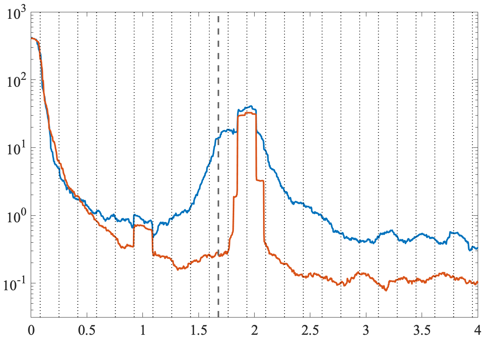
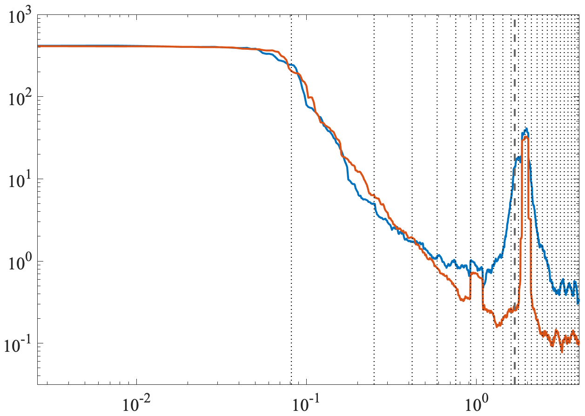

name: spectralanalysis class: center,middle, .toc[[✧](../index.html)] .title[Spectral Analysis] <!-- class: left, .toc[[✧](../index.html)] #In-Class Assignments 1. In Matlab, let `$n=(0:N-1)'$` for some choice `$N$`. Form the array `$x=2*($`<tt>iseven</tt>`$(n)-1/2)$` and understand what this is giving you. Then take `$X=$`<tt>fft</tt>`$(x)$` for both `$N$` even and odd. 2. As a result of this excercise, at what position does the highest resolvable frequency appear in the Fourier transform? Know this in one-based counting, the position in the Matlab array, and in zero-based counting, which we are using for algebra. 4. Run <tt>psi=sleptap(length(x),M);</tt> followed by <tt>[f,S]=mspec(dt,x,psi)</tt> for `$M=4$.` Compute the variance by integrating the spectrum, not forgetting to multiply by the frequency interval. Compare to the variance computed directly from `$x$.` Do these match? 1. Run <tt>psi=sleptap(length(x),M);</tt> for `$M=3$.` Plot `$\psi$` on the left axis of a plot and the log of its <tt>fft</tt> on the right-hand side. --> --- class: center, .toc[[✧](../index.html)] #Model Trajectories <img style="width:100%" src="../../figures/noninertialtrajectories.png"> Particle trajectories in a model of baroclinic turbulence on a `$\beta$` plane, from a simulation by E. Danioux. --- class: center, .toc[[✧](../index.html)] #The Periodogram <img style="width:100%" src="../../figures/noninertialperiodogram.png"> Rotary spectra estimated using the periodogram. Red line is a characteristic frequency that we can ignore. --- class: center, .toc[[✧](../index.html)] #Blurring Illustation <img style="width:100%" src="../../figures/noninertialadaptive.png"> Periodgram compared with adaptive multitaper estimate. The periodogram is dominated by artifacts due to spectral blurring. --- class: left, .toc[[✧](../index.html)] #The Origin of Blurring The effect we are seeing is called spectral blurring, or more precisely, broadband leakage. This phenomenon has to do with the Rayleigh frequency and has nothing to do with the Nyquist frequency. Therefore, we can consider that our observations consist of a continuous time series (i.e. we let `$\Delta \longrightarrow 0$`) that is defined as `\[z_T(t)\equiv\left\{\begin{array}{ccc}z(t) && t\le T/2 \\ 0 && t > T/2\end{array}\right.\]` where the centering of the observed time interval `$T$` about zero is chosen purely for mathematical convenience. We aim to estimate the properties of `$z(t)$` from its continuous observations `$z_T(t)$` over the finite interval `$T$`. -- Do you see a problem? <!-- , meaning--> --- class: center, .toc[[✧](../index.html)] #The Origin of Blurring `$z(t)$` in blue, `$z_T(t)$` in orange <img style="width:85%" src="../../figures/truncatedz.png"> How about now? --- class: center, .toc[[✧](../index.html)] #The Origin of Blurring `$z(t)$` in blue, `$z_T(t)$` in orange <img style="width:85%" src="../../figures/truncatedz2.png"> How about now? --- class: center, .toc[[✧](../index.html)] #The Origin of Blurring <img style="width:85%" src="../../figures/boxcar.png"> How about now? --- class: left, .toc[[✧](../index.html)] #The Origin of Blurring The problem is that you are implicitly *multiplying* the infinite-duration process `$z(t)$` by a boxcar or rectangle function to generate the truncated process `$z_T(t)$`. Because of the convolution theorem—a multiplication in one domain is a convolution in the other—the Fourier transform of `$z_T(t)$` is the Fourier transform of `$z(t)$` convolved with the Fourier transform of the boxcar—a non-localized and oscillatory function. <!--, which we have already seen to be .--> We will show that the spectrum is then smoothed by the square of the Fourier transform of the boxcar, also a non-localized and oscillatory function. <!--We can address this problem more exactly by introducing a few new functions.--> Note, we will avoid needing to deal with a convolution involving the increment process `$dZ(\omega)$` through some careful choices. --- class: center, .toc[[✧](../index.html)] #Rectangle and Triangle <center><img style="width:80%" src="../../figures/boxcarandtriangle.png"></center> The rectangle (a.k.a. boxcar) `$\Pi_T(t)$` and triangle `$\Lambda_T(t)$` functions are `\begin{equation} \Pi_T(t)\equiv \left\{\begin{array} {cc} 1, & t\le T/2 \\ 0, & t> T/2 \end{array}\right.,\quad\quad\quad \Lambda_T(t)\equiv \left\{\begin{array} {cc} 1-\frac{|\tau|}{T}, & t\le T \\ 0, & t> T \end{array}\right. \end{equation}` Note that the triangle is the rectangle convolved with itself `\[\Lambda_T(t) = \frac{1}{T}\int_{-\infty}^{\infty} \Pi_T(\tau) \Pi_T(t-\tau) d\tau\]` <!-- The boxcar, or rectangle, function `$\Pi_T(t)$` is defined to be unity for `$t\le T/2$` and zero otherwise. The triangle function `$\Lambda_T(t)$` is `$T^{-1}$` times the convolution of the boxcar with itself `\[\Lambda_T(t) \equiv \frac{1}{T}\int_{-\infty}^{\infty} \Pi_T(\tau) \Pi_T(t-\tau) d\tau = \]` `\[\Lambda_T(t) \equiv \frac{1}{T}\int_{-\infty}^{\infty} \Pi_T(\tau) \Pi_T(t-\tau) d\tau = \frac{1}{T}\int_{-T/2}^{T/2} \Pi_T(\tau) \Pi_T(t-\tau) d\tau \]`--> <!--\left(1-\frac{|\tau|}{T}\right) \, --> --- class: center, .toc[[✧](../index.html)] #Their Fourier Transforms <center><img style="width:85%" src="../../figures/dirichletandfejer.png"></center> The Fourier transforms of the rectangle and triangle are known as the Dirichlet and Fejér kernels, respectively, and defined as `\begin{align} D_T(\omega)&\equiv \int_{-\infty}^{\infty}\Pi_T(t)e^{i\omega t} \, d t &=&\frac{\sin(\omega T/2)}{\omega/2}\\ F_T(\omega)&\equiv \int_{-\infty}^{\infty}\Lambda_T(t)e^{i\omega t} \, d t &=&\frac{1}{T}\frac{\sin^2(\omega T/2)}{(\omega/2)^2} \end{align}` --- class: center, .toc[[✧](../index.html)] #Their Fourier Transforms <center><img style="width:85%" src="../../figures/dirichletandfejer_log.png"></center> Same as the previous plot but taking the magnitude and using a logarithmic y-axis. Note the oscillations in both kernels. --- class: left, .toc[[✧](../index.html)] #Why Blurring Occurs From the observed time series `$z_T(t)$`, we can define an expected observed autocovariance function as (assuming `$z(t)$` is zero mean) `\[R_T(\tau) \equiv \mathrm{E}\left\{\frac{1}{T}\int_{-T/2}^{T/2} z_T(t+\tau) z_T^*(t) dt \right\}\]` and we can show that this is equal to the true autocovariance times the triangle function `\[R_T(\tau) = R(\tau) \Lambda_T(\tau).\]` <!--`\[R_T(\tau) \equiv \mathrm{E}\left\{\frac{1}{T}\int_{-T/2}^{T/2} \left[\Pi_T(t+\tau)z(t+\tau)\right] \left[\Pi_T(\tau)z^*(\tau)\right] dt \right\}\]`--> From the convolution theorem we immediately know, therefore, that the spectrum corresponding to `$R_T(\tau)$` is `\[R_T(\tau) = R(\tau) \Lambda_T(\tau) \Longleftrightarrow S_T(\omega) \equiv \int_{-\infty}^\infty S(\omega-\nu) F_T(\nu) d \nu\]` which is the true spectrum smoothed by the Fejér kernel. --- class: left, .toc[[✧](../index.html)] #Why Blurring Occurs Let's understand this important result. `\[R_T(\tau) = R(\tau) \Lambda_T(\tau) \Longleftrightarrow S_T(\omega) \equiv \int_{-\infty}^\infty S(\omega-\nu) F_T(\nu) d \nu\]` The quantity `$S_T(\omega)$` is the spectral estimate you would have if you (i) could average over an entire statistical ensemble, removing all variance, and (ii) had an infinitesimally short sample interval `$\Delta$`, thus eliminating aliasing. `$S_T(\omega)$` correponds to the *expected value* of the periodogram in the limit of the infinitesimally short sample interval `$\Delta$`. Unlike `$S_T(\omega)$`, this limiting version of the periodogram will still have variance. This blurring effect is more precisely known as *broadband leakage* or *broadband bias*. Note the term "bias" means "nonrandom error". **Note that broadband bias error does not go away no matter how much you average!** --- class: left, .toc[[✧](../index.html)] #Proof To prove that `$R_T(\tau) = R(\tau) \Lambda_T(\tau)$`, we proceed as follows. `\begin{multline} R_T(\tau) \equiv \mathrm{E}\left\{\frac{1}{T}\int_{-T/2}^{T/2} z_T(t+\tau) z_T^*(t) dt \right\}\\ =\frac{1}{T}\int_{-\infty}^\infty \Pi_T(t+\tau) \Pi_T(t) \mathrm{E}\left\{ z(t+\tau) z^*(t) \right \} dt \\ = R(\tau) \frac{1}{T}\int_{-\infty}^\infty \Pi_T(t+\tau) \Pi_T(t) dt\\ = R(\tau) \frac{1}{T}\int_{-\infty}^\infty \Pi_T(\tau-t) \Pi_T(t) dt \end{multline}` To show this, we (i) insert the definition `$z_T(t)\equiv \Pi_T(t)z(t)$`; (ii) assume stationarity to render `$R(\tau)\equiv\mathrm{E}\left\{ z(t+\tau) z^*(t) \right \}$` independent of global time `$t$`; use the earlier result `$\Lambda_T(t) = \frac{1}{T}\int_{-\infty}^{\infty} \Pi_T(\tau) \Pi_T(t-\tau) d\tau$` to obtain `$R_T(\tau) = R(\tau) \Lambda_T(\tau)$` as claimed. --- class: left, .toc[[✧](../index.html)] #Motivation for Tapering ‘Tapering’ means multiplying your sampled time series `$z_n$` by some function, called the *data taper*, that is the same length as `$z_n$.` We can now understand the purpose of tapering. *Doing nothing* in your spectral estimate is equivalent to *truncating* your data with a rectangle, thus implicitly *smoothing* the true spectrum with a Fejér kernel, an undesirable function! The Fejér kernel has a major problem in that it is not *well concentrated*. Its “side lobes” are large, leading to *broadband bias*, the source of the leakage error in the earlier example. To remove this error, we replace the implicit, or default taper—the rectangle or boxcar function—with one chosen to have more desirable properties. Next we take a look at three different tapering functions and their squared Fourier transforms. The taper leakage is most clear if we use logarithmic scaling for the `$y$`-axis. --- class: left, .toc[[✧](../index.html)] #Three Tapering Windows <center><img style="width:100%" src="../../figures/smoothingwindowstime.png"></center> --- class: left, .toc[[✧](../index.html)] #Three Tapering Windows <center><img style="width:100%" src="../../figures/smoothingwindowsfrequency.png"></center> --- class: left, .toc[[✧](../index.html)] #Three Tapering Windows <center><img style="width:100%" src="../../figures/smoothingwindowslogfrequency.png"></center> --- class: left, .toc[[✧](../index.html)] #The Multitaper Method The multitaper combines *tapering* to remove broadband bias with *averaging* to remove variance. It is based on the use of not just one taper, but a set of taper functions that are all orthogonal to one another. These functions are the solutions to an optimization problem such that they are *optimally concentrated* within a specified frequency band. <!-- method controls the degrees of spectral *smoothing* and *averaging* through changing the properties of the tapers.--> <!--The multitaper method is generally the favorite spectral analysis method among those researchers who have thought the most about spectral analysis.--> It is recommended because (i) it avoids the deficiencies of the periodogram, (ii) it has, in a certain sense, provable optimal properties, (iii) it is very easy to implement and adjust. This method was developed by David Thomson in an seminal paper in 1982. It is explored in great detail in Percival and Walden's book, *Spectral Analysis for Physical Applications*. A very nice introductory paper is Park et al. (1987), “Frequency-dependent polarization analysis of high-frequency seismograms”, *Journal of Geophysical Research C*. --- class:center, .toc[[✧](../index.html)] #The Multitaper Functions <img style="width:85%" src="../../figures/tapers.png"> `Here $K=5$` tapers are shown, denoted `$\psi_n^{\{k\}}$`. These are orthogonal functions that become more oscillatory for increasing `$k$.` --- class:left, .toc[[✧](../index.html)] #What are Multitapers? The multitapers `$\psi_n^{\{k\}}$` are a set of `$K$` orthogonal functions defined for the same time points as our data, i.e. `$n=0,1,2,\ldots,N-1$`. They are closely related to the Hermite functions, a family of orthogonal functions you may have encountered previously. Orthogonal means `$\sum_{n=0}^{N-1}\psi_n^{\{k\}}\psi_n^{\{\ell\}}=0$` for `$k\ne \ell$`. Practically, this means that the different `$k$` have *different numbers of extrema*. The multitapers are the solutions to the problem, "find the length `$N$` discrete time series having its frequency-domain energy most strongly concentrated within a band of half-width `$W$` around zero." The `$k=1$` taper is *most concentrated* length `$N$` sequence, the `$k=2$` taper is the second-most concentrated, etc. In other words, of all possible functions, the `$k=1$` taper is that which will minimize broadband bias leaking in from outside a chosen frequency band, etc. *Broadband bias is explicitly controlled.* --- class:left, .toc[[✧](../index.html)] #More About Multitapers The eigenvalue problem for which the tapers are a solution has, in addition to `$N$`, the free parameter `$W$` which is the half-width of the interval in Fourier space that you want the spectral energy to be concentrated. It is more standard to use the *time-bandwidth product* `$P\equiv NW$` as this free parameter. The tapers `$\psi_n^{\{k\}}$` each come with an eigenvalue `$\lambda^{\{k\}}$` that determines the fraction of spectral energy concentrated within the band. These are ordered with `$\lambda^{\{1\}}>\lambda^{\{2\}}>\lambda^{\{3\}}\cdots$`. Generally the first taper has `$\lambda^{\{1\}}=0.999999999 \ldots$`. There tend to be `$K=2P-1$` tapers that are strongly concentrated, i.e. with `$\lambda$` near unity. For higher `$k$`, the tapers are not well concentrated, so we generally only use the first `$K$` of them. --- class: left, .toc[[✧](../index.html)] #Multitaper Details In the multitaper method, we will form a set of `$K$` different sequences the same length as the data, that is, having `$N$` points in time. These sequences are chosen from a special family of functions. These `$K$` different sequences are denoted as `$\psi_n^{\{k\}}$` for `$k=1,2,\ldots K$.` For each of these sequence, we form a spectral estimate as `\[\widehat S_m^{\{k\}}\equiv \left|\sum_{n=0}^{N-1} \psi_n^{\{k\}} z_n\, e^{-i 2\pi m n/N}\right|^2,\quad\quad n=0, 1, 2, \ldots,(N-1).\]` which involves *multiplying* the data by the sequence `$\psi_n^{\{k\}}$` before taking the Fourier transform. Thus we have not one but `$K$` different estimated spectra, corresponding to the each of the `$K$` tapers. --- class: left, .toc[[✧](../index.html)] #Multitaper Details The action of multiplying the data by some sequence before Fourier transforming it, as in `\[\widehat S_m^{\{k\}}\equiv \left|\sum_{n=0}^{N-1} \psi_n^{\{k\}} z_n\, e^{-i 2\pi m n/N}\right|^2,\quad\quad n=0, 1, 2, \ldots,(N-1)\]` is called *tapering*. The motivation for tapering is to reduce *bias*. The `$K$` different individual estimates, sometimes known as the *eigenspectra*, are combined into one *average* spectral estimate `\[\widehat S_m^{\psi}\equiv \frac{1}{K}\sum_{k=1}^K\widehat S_m^{\{k\}}.\]` The motivation for this averaging is to reduce *variance*. The multitaper method therefore involves: (i) *tapering* the data, and (ii) *averaging* over multiple individual spectral estimates. --- class: left, .toc[[✧](../index.html)] #The Bias-Variance Tradeoff There is a non-negotiable tradeoff in spectral analysis no matter what method is used. We can see this as follows. If we use only a single data taper, it can be very concentrated in frequency, thus reducing broadband bias. However, as it downweights data near the ends of the time series—essentially throwing away information— variance is increased! If we then add more tapers to reduce variance, these will necessarily be less concentrated in frequency, and thus bias will increase. This *bias-variance tradeoff* is a fact of life. You're just stuck with it. <!---like the Heisenberg uncertainty principle--> In practice, one can simply adjust the number of tapers used to obtain a tradeoff that subjectively looks good. There is also an *adaptive* version of the multitaper method, again due to Thomson, that makes its own decision about how to handle this tradeoff using a simple iterative method. It works great. --- class: left, .toc[[✧](../index.html)] #Frequency Smoothing Because it involves a multiplication in the time domain, the multitaper method corresponds to a frequency-domain smoothing. The tapers are controlled by `$P=NW$`, the second argument in the call <tt>mspec</tt>. `$W$` is the half-width of the concentration band. Since `$W=P/N$`, `$P$` is the number of Rayleigh frequencies in the half-width. If `$P=16$`, for example, this means that all peaks corresponding to spectral lines, such as tides, will tend to be 32 Rayleigh frequencies wide. If you plot the spectrum with no frequency argument, as in <tt>plot(spp)</tt>, such peaks will tend to be 32 points wide. Similarly, if there is a mean located at the zero frequency, its effect will be felt out to 16 Rayleigh frequencies on either side of zero. This is the reason why a plateau is often seen near zero—it is a consequence of the frequency-domain smoothing. This can generallly be minimized by subtracting the mean before estmating the spectrum. --- class: left, .toc[[✧](../index.html)] #Bravo Spectrum with `$P=32$` <center></center> --- class: left, .toc[[✧](../index.html)] #Bravo Spectrum with `$P=32$` <center></center> --- class: left, .toc[[✧](../index.html)] #Conclusion The spectrum is the fundamental second-order description of a stochastic time series. Its estimation from a discretely sampled, finite duration time series poses challenges. Three particular challenges are: (i) aliasing, due to the discrete sample interval; (ii) spectral blurring, due to the truncation to finite duration; and (iii) variance, due to stochastic variability. The multitaper method involves pre-multiplying the data by a set of orthogonal functions that are optimally concentrated in frequency. The tapering by well-concentrated functions reduces broadband bias, while the averaging over several estimates reduces variance. <!--A very nice introductory paper on the underlying theory is Park et al. (1987), “Frequency-dependent polarization analysis of high-frequency seismograms”, *Journal of Geophysical Research C*. --> Important note! If your data is such that you have many realizations of it—for example, the exact same experiment was run many times— then you have an actual ensemble. In this case, one can average over the *ensemble* to reduce variance. Therefore, one only needs to apply a single data taper in order to reduce bias. There is no need to employ multiple tapers in this case. <!-- 1. Use Euler's formula to write down `$e^{i\omega_o t}+e^{-i\omega_o t}$` and `$e^{i\omega_o t}-e^{-i\omega_o t}$`. 1. Draw the Fourier transforms of `$e^{i\omega_o t}$` and `$e^{-i\omega_o t}$`. 1. Draw the Fourier transforms of `$\cos(\omega_o t)$` and `$\sin(\omega_o t)$`. 1. Write down the form of the inverse Fourier transform equation, `$x(t)=$`. What does a shift in time correspond to in the frequency domain? 1. Write down the form of the forward Fourier transform equation, `$X(\omega)=$`. What does a shift in frequency correspond to in the time domain? 1. Draw a rectangle or boxcar function of time and its Fourier transform, to the best of your memory. Label the zero frequency. 2. Repeat #2 but for a boxcar multiplied by `$e^{i\omega_o t}$`. 2. Repeat #2 but for a boxcar multiplied by `$\cos(\omega_o t)$`.-->